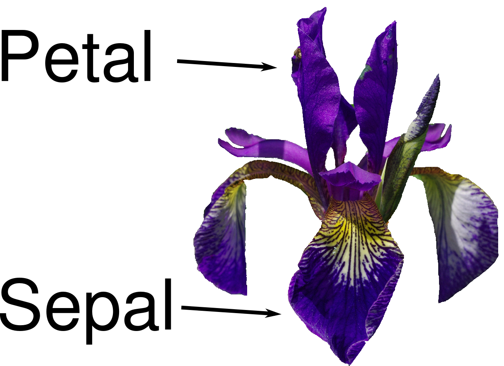
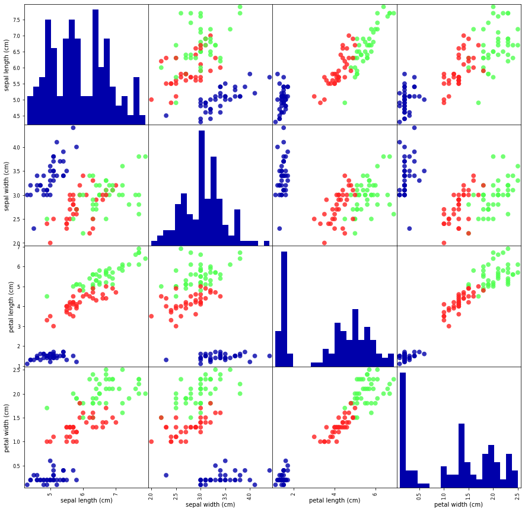

from preamble import *
%matplotlib inlineChapter 1 - Introduction
Introduction
Why Machine Learning?
Problems Machine Learning Can Solve
Knowing Your Task and Knowing Your Data
Why Python?
scikit-learn
Installing scikit-learn
Essential Libraries and Tools
Jupyter Notebook
NumPy
import numpy as np
x = np.array([[1, 2, 3], [4, 5, 6]])
print("x:\n{}".format(x))x:
[[1 2 3]
[4 5 6]]SciPy
from scipy import sparse
# Create a 2D NumPy array with a diagonal of ones, and zeros everywhere else
eye = np.eye(4)
print("NumPy array:\n", eye)NumPy array:
[[1. 0. 0. 0.]
[0. 1. 0. 0.]
[0. 0. 1. 0.]
[0. 0. 0. 1.]]# Convert the NumPy array to a SciPy sparse matrix in CSR format
# Only the nonzero entries are stored
sparse_matrix = sparse.csr_matrix(eye)
print("\nSciPy sparse CSR matrix:\n", sparse_matrix)
SciPy sparse CSR matrix:
(0, 0) 1.0
(1, 1) 1.0
(2, 2) 1.0
(3, 3) 1.0data = np.ones(4)
row_indices = np.arange(4)
col_indices = np.arange(4)
eye_coo = sparse.coo_matrix((data, (row_indices, col_indices)))
print("COO representation:\n", eye_coo)COO representation:
(0, 0) 1.0
(1, 1) 1.0
(2, 2) 1.0
(3, 3) 1.0matplotlib
%matplotlib inline
import matplotlib.pyplot as plt
# Generate a sequence of numbers from -10 to 10 with 100 steps in between
x = np.linspace(-10, 10, 100)
# Create a second array using sine
y = np.sin(x)
# The plot function makes a line chart of one array against another
plt.plot(x, y, marker="x")
pandas
import pandas as pd
# create a simple dataset of people
data = {'Name': ["John", "Anna", "Peter", "Linda"],
'Location' : ["New York", "Paris", "Berlin", "London"],
'Age' : [24, 13, 53, 33]
}
data_pandas = pd.DataFrame(data)
# IPython.display allows "pretty printing" of dataframes
# in the Jupyter notebook
display(data_pandas)| Name | Location | Age | |
|---|---|---|---|
| 0 | John | New York | 24 |
| 1 | Anna | Paris | 13 |
| 2 | Peter | Berlin | 53 |
| 3 | Linda | London | 33 |
# Select all rows that have an age column greater than 30
display(data_pandas[data_pandas.Age > 30])| Name | Location | Age | |
|---|---|---|---|
| 2 | Peter | Berlin | 53 |
| 3 | Linda | London | 33 |
mglearn
Python 2 versus Python 3
Versions Used in this Book
import sys
print("Python version:", sys.version)
import pandas as pd
print("pandas version:", pd.__version__)
import matplotlib
print("matplotlib version:", matplotlib.__version__)
import numpy as np
print("NumPy version:", np.__version__)
import scipy as sp
print("SciPy version:", sp.__version__)
import IPython
print("IPython version:", IPython.__version__)
import sklearn
print("scikit-learn version:", sklearn.__version__)Python version: 3.7.6 (default, Jan 8 2020, 20:23:39) [MSC v.1916 64 bit (AMD64)]
pandas version: 1.0.3
matplotlib version: 3.1.3
NumPy version: 1.18.1
SciPy version: 1.4.1
IPython version: 7.13.0
scikit-learn version: 0.24.dev0A First Application: Classifying Iris Species
 #### Meet the Data
from sklearn.datasets import load_iris
iris_dataset = load_iris()print("Keys of iris_dataset:\n", iris_dataset.keys())Keys of iris_dataset:
dict_keys(['data', 'target', 'frame', 'target_names', 'DESCR', 'feature_names', 'filename'])print(iris_dataset['DESCR'][:193] + "\n...").. _iris_dataset:
Iris plants dataset
--------------------
**Data Set Characteristics:**
:Number of Instances: 150 (50 in each of three classes)
:Number of Attributes: 4 numeric, pre
...print("Target names:", iris_dataset['target_names'])Target names: ['setosa' 'versicolor' 'virginica']print("Feature names:\n", iris_dataset['feature_names'])Feature names:
['sepal length (cm)', 'sepal width (cm)', 'petal length (cm)', 'petal width (cm)']print("Type of data:", type(iris_dataset['data']))Type of data: <class 'numpy.ndarray'>print("Shape of data:", iris_dataset['data'].shape)Shape of data: (150, 4)print("First five rows of data:\n", iris_dataset['data'][:5])First five rows of data:
[[5.1 3.5 1.4 0.2]
[4.9 3. 1.4 0.2]
[4.7 3.2 1.3 0.2]
[4.6 3.1 1.5 0.2]
[5. 3.6 1.4 0.2]]print("Type of target:", type(iris_dataset['target']))Type of target: <class 'numpy.ndarray'>print("Shape of target:", iris_dataset['target'].shape)Shape of target: (150,)print("Target:\n", iris_dataset['target'])Target:
[0 0 0 0 0 0 0 0 0 0 0 0 0 0 0 0 0 0 0 0 0 0 0 0 0 0 0 0 0 0 0 0 0 0 0 0 0
0 0 0 0 0 0 0 0 0 0 0 0 0 1 1 1 1 1 1 1 1 1 1 1 1 1 1 1 1 1 1 1 1 1 1 1 1
1 1 1 1 1 1 1 1 1 1 1 1 1 1 1 1 1 1 1 1 1 1 1 1 1 1 2 2 2 2 2 2 2 2 2 2 2
2 2 2 2 2 2 2 2 2 2 2 2 2 2 2 2 2 2 2 2 2 2 2 2 2 2 2 2 2 2 2 2 2 2 2 2 2
2 2]Measuring Success: Training and Testing Data
from sklearn.model_selection import train_test_split
X_train, X_test, y_train, y_test = train_test_split(
iris_dataset['data'], iris_dataset['target'], random_state=0)print("X_train shape:", X_train.shape)
print("y_train shape:", y_train.shape)X_train shape: (112, 4)
y_train shape: (112,)print("X_test shape:", X_test.shape)
print("y_test shape:", y_test.shape)X_test shape: (38, 4)
y_test shape: (38,)First Things First: Look at Your Data
# create dataframe from data in X_train
# label the columns using the strings in iris_dataset.feature_names
iris_dataframe = pd.DataFrame(X_train, columns=iris_dataset.feature_names)
# create a scatter matrix from the dataframe, color by y_train
pd.plotting.scatter_matrix(iris_dataframe, c=y_train, figsize=(15, 15),
marker='o', hist_kwds={'bins': 20}, s=60,
alpha=.8, cmap=mglearn.cm3)array([[<matplotlib.axes._subplots.AxesSubplot object at 0x000001BE868F9C88>,
<matplotlib.axes._subplots.AxesSubplot object at 0x000001BE869714C8>,
<matplotlib.axes._subplots.AxesSubplot object at 0x000001BE869A5D48>,
<matplotlib.axes._subplots.AxesSubplot object at 0x000001BE869DFE08>],
[<matplotlib.axes._subplots.AxesSubplot object at 0x000001BE86A18E48>,
<matplotlib.axes._subplots.AxesSubplot object at 0x000001BE86A4FEC8>,
<matplotlib.axes._subplots.AxesSubplot object at 0x000001BE86A88F88>,
<matplotlib.axes._subplots.AxesSubplot object at 0x000001BE86AC8088>],
[<matplotlib.axes._subplots.AxesSubplot object at 0x000001BE86ACEC48>,
<matplotlib.axes._subplots.AxesSubplot object at 0x000001BE86B06D88>,
<matplotlib.axes._subplots.AxesSubplot object at 0x000001BE86B71188>,
<matplotlib.axes._subplots.AxesSubplot object at 0x000001BE86BAA208>],
[<matplotlib.axes._subplots.AxesSubplot object at 0x000001BE86BE22C8>,
<matplotlib.axes._subplots.AxesSubplot object at 0x000001BE86C1A388>,
<matplotlib.axes._subplots.AxesSubplot object at 0x000001BE86C54408>,
<matplotlib.axes._subplots.AxesSubplot object at 0x000001BE86C8C3C8>]],
dtype=object)
Building Your First Model: k-Nearest Neighbors
from sklearn.neighbors import KNeighborsClassifier
knn = KNeighborsClassifier(n_neighbors=1)knn.fit(X_train, y_train)KNeighborsClassifier(n_neighbors=1)Making Predictions
X_new = np.array([[5, 2.9, 1, 0.2]])
print("X_new.shape:", X_new.shape)X_new.shape: (1, 4)prediction = knn.predict(X_new)
print("Prediction:", prediction)
print("Predicted target name:",
iris_dataset['target_names'][prediction])Prediction: [0]
Predicted target name: ['setosa']Evaluating the Model
y_pred = knn.predict(X_test)
print("Test set predictions:\n", y_pred)Test set predictions:
[2 1 0 2 0 2 0 1 1 1 2 1 1 1 1 0 1 1 0 0 2 1 0 0 2 0 0 1 1 0 2 1 0 2 2 1 0
2]print("Test set score: {:.2f}".format(np.mean(y_pred == y_test)))Test set score: 0.97print("Test set score: {:.2f}".format(knn.score(X_test, y_test)))Test set score: 0.97Summary and Outlook
X_train, X_test, y_train, y_test = train_test_split(
iris_dataset['data'], iris_dataset['target'], random_state=0)
knn = KNeighborsClassifier(n_neighbors=1)
knn.fit(X_train, y_train)
print("Test set score: {:.2f}".format(knn.score(X_test, y_test)))Test set score: 0.97